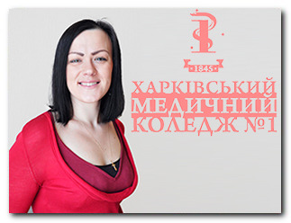
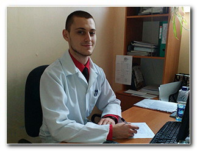
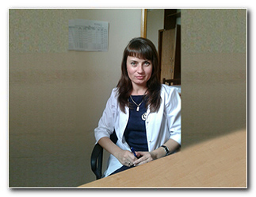
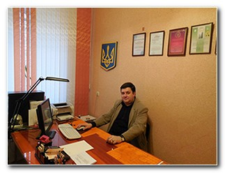
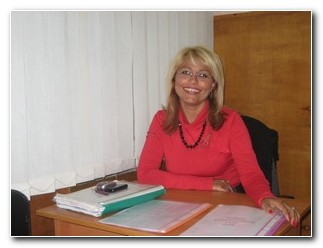
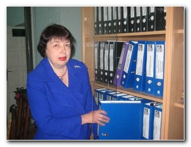
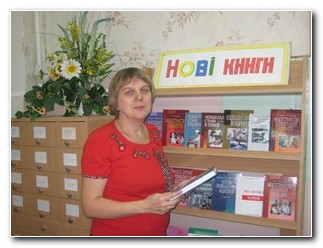
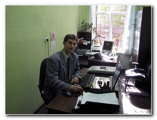

Адміністрація
Харківського медичного коледжу №1
Дегтярьова Нiна Василiвна — виконуюча обов’язки директора

Ткаченко Олена Володимирівна — виконуюча обов’язки заступника директора з питань гуманітарної освіти та виховання
Флоріна Наталія Олександрівна — заступник директора по учбово-виробничій роботі
Лучникова Світлана Володимирівна — завідувач практичним навчанням

Трухачов Костянтин Іванович — заступник директора з адміністративно-господарчої роботи
Краснова Тетяна Федорівна — начальник планово-економічного відділу

Казюта Сергій Володимирович – завідувач відділення лікувальної справи, акушерської справи, лабораторної діагностики і медико-профілактичної справи

Гавриленко Ольга Іванівна — завідувач відділення сестринської справи

Оленчук Ігор Ярославич — завідувач медико-технічного відділення

Хабусєва Марина Сергіївна — завідувач відділення перших курсів

Парафейник Тамара Григорівна — методист коледжу

Скибіна Світлана Григорівна — завідувач бібліотечного комплексу

Григорян Віола Кимівна — голова об'єднаної профспілки викладачів, співробітників і студентів коледжу

Жердецький Ігор Григорович — завідувач відділення додаткових освітніх послуг
НАША АДРЕСА
1 корпус
м. Харкiв, 61002,
узвіз Куликівський, 3
тел./факс:
706-39-66, 706-39-64
3 корпус
м. Харкiв,
вул. Гуданова, 4/10
тел. 704-13-15
2 корпус
м. Харкiв,
вул. Амосова, 3а
тел./факс:
310-01-85, 710-27-67
4 корпус та гуртожиток
м. Харкiв,
вул. Луї Пастера, 2
тел. 393-22-72
E-mail: